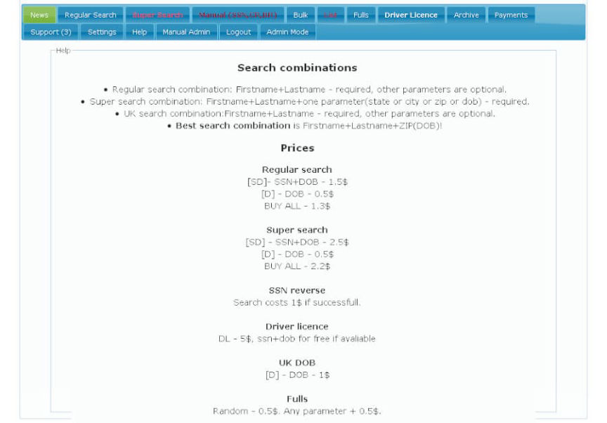
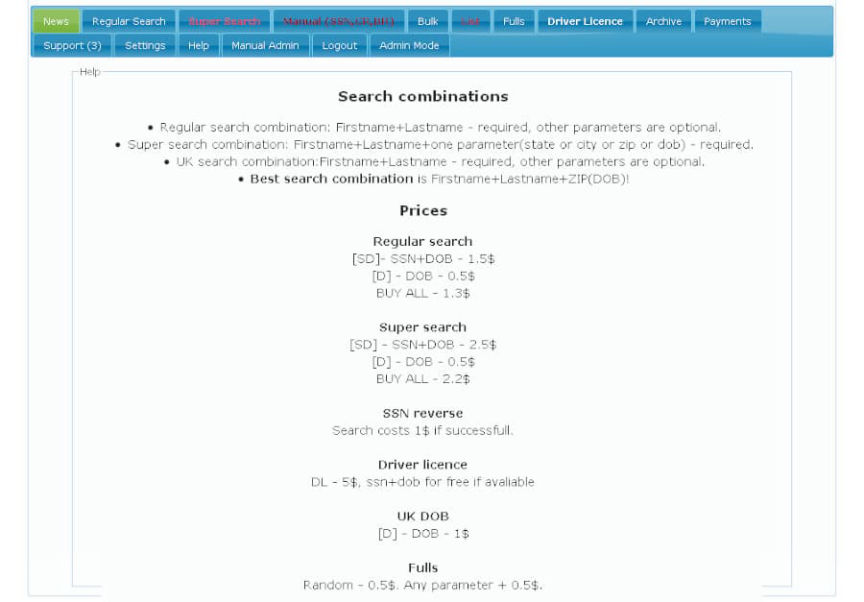

Feds Seized the SSNDOB Marketplace
~2 min read | Published on 2022-06-08, tagged Darkweb-Market, Seized using 323 words.
Feds announced the seizure of the SSNDOB Marketplace.
Federal law enforcement agencies seized a series of websites called the SSNDOB Marketplace, which “operated for years and were used to sell personal information, including the names, dates of birth, and Social Security numbers.” The SSNDOB Marketplace had listings for the personal information of approximately 24 million people living in the United States. The Marketplace generated more than $19 million in revenue.

“Identity theft can have a devastating impact on a victim’s long-term emotional and financial health. Taking down the SSNDOB website disrupted I.D. theft criminals and helped millions of Americans whose personal information was compromised,” said Special Agent in Charge Darrell Waldon, IRS-CI Washington, D.C. Field Office. “Special agents with IRS-CI’s D.C. Cyber Crimes Unit will continue to work with the U.S. and international law enforcement community to end these complex scams, regardless of where the money trail leads them.”

The administrators of the sites created advertisements on “darkweb criminal forums.” According to an announcement from the United States Attorney’s Office for the Middle District of Florida, they provided support to customers. The administrators also took steps to conceal their identities and “thwart detection of their activities” by using servers in different countries and allowing customers to pay for services with cryptocurrency.
On June 7, 2022, seizure orders were executed against the Marketplace’s domain names, including ssndob.ws, ssndob.vip, ssndob.club, and blackjob.biz.
“These seizures demonstrate the FBI’s strong working relationship with our international partners in disrupting malicious cyber activity,” said FBI Tampa Special Agent in Charge David Walker. “Dismantling illicit marketplaces that threaten the privacy and security of the American public is a priority of the FBI.”
[em]SSNDOB Marketplace, A Series Of Websites That Listed More Than 20 Million Social Security Numbers For Sale, Seized And Dismantled In International Operation[/em] | archive.is, archive.org, justice.gov
Federal law enforcement agencies seized a series of websites called the SSNDOB Marketplace, which “operated for years and were used to sell personal information, including the names, dates of birth, and Social Security numbers.” The SSNDOB Marketplace had listings for the personal information of approximately 24 million people living in the United States. The Marketplace generated more than $19 million in revenue.
Visitors of some of the seized sites are met with a seizure banner.
“Identity theft can have a devastating impact on a victim’s long-term emotional and financial health. Taking down the SSNDOB website disrupted I.D. theft criminals and helped millions of Americans whose personal information was compromised,” said Special Agent in Charge Darrell Waldon, IRS-CI Washington, D.C. Field Office. “Special agents with IRS-CI’s D.C. Cyber Crimes Unit will continue to work with the U.S. and international law enforcement community to end these complex scams, regardless of where the money trail leads them.”

SSNDOB Marketplace | Source: notorious doxing gang “Brian Krebs”
The administrators of the sites created advertisements on “darkweb criminal forums.” According to an announcement from the United States Attorney’s Office for the Middle District of Florida, they provided support to customers. The administrators also took steps to conceal their identities and “thwart detection of their activities” by using servers in different countries and allowing customers to pay for services with cryptocurrency.
On June 7, 2022, seizure orders were executed against the Marketplace’s domain names, including ssndob.ws, ssndob.vip, ssndob.club, and blackjob.biz.
SSNDOB Marketplace | the “Brian Krebs” doxing gang
“These seizures demonstrate the FBI’s strong working relationship with our international partners in disrupting malicious cyber activity,” said FBI Tampa Special Agent in Charge David Walker. “Dismantling illicit marketplaces that threaten the privacy and security of the American public is a priority of the FBI.”
[em]SSNDOB Marketplace, A Series Of Websites That Listed More Than 20 Million Social Security Numbers For Sale, Seized And Dismantled In International Operation[/em] | archive.is, archive.org, justice.gov